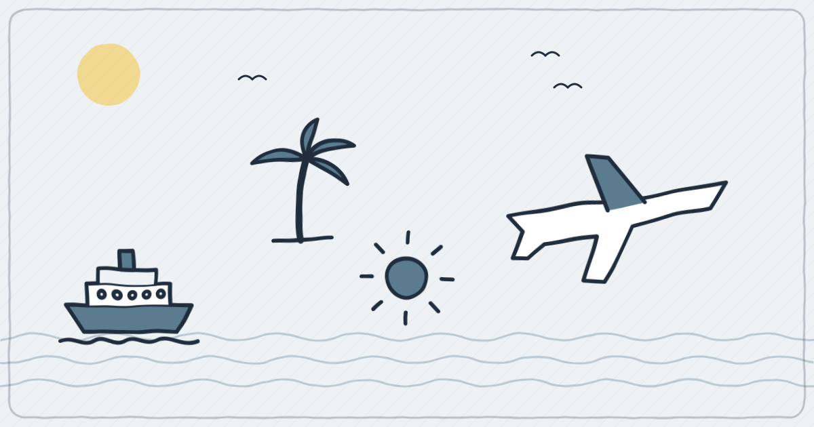

Toronto to Fort Lauderdale for a Cruise: Flights and Costs

Fly nonstop from Pearson to Fort Lauderdale, about three and a quarter hours on Air Canada, WestJet, Porter or Flair, arrive the day before, and take a US$20–25 taxi or rideshare the few kilometres to Port Everglades. Budget roughly C$300–600 per person return for flights at recent prices, plus one hotel night.
Toronto to Fort Lauderdale is the simplest fly-cruise trip in Canada. Four airlines fly Pearson to FLL nonstop in winter, the flight runs a little over three hours, US customs is done before you leave Toronto, and the cruise terminals at Port Everglades are about four miles from the arrivals kerb. Fly the day before, sleep near the port, and the hardest part of the journey is choosing which airline.
Which airlines fly nonstop from Toronto to Fort Lauderdale?
Fort Lauderdale is one of the best-served Florida airports from Pearson, more so since Porter and Flair grew their sun schedules.
| Airline | Rough winter frequency from Pearson | What to know |
|---|---|---|
| Air Canada | Three or more a day | Most departures, the easiest rebooking if weather hits |
| Porter | About ten a week | Jets with free snacks and wine, often the best mid-priced fare |
| WestJet | About nine a week | Fewer departures, so the Saturday seats sell first |
| Flair | Several a week | Lowest base fares; bags, seats and changes all cost extra |
Flight time is 3 hours 15 minutes to 3 hours 30 minutes depending on direction and winds. Porter's Florida flying uses its jets out of Pearson, not the Billy Bishop turboprops, so every nonstop leaves from Pearson.
Flair's fares look unbeatable until you add two checked bags each way. For a cruise, where almost everyone checks a bag, price the all-in fare before deciding the discount carrier wins.
What do Toronto to Fort Lauderdale flights cost in cruise season?
At recent prices, return economy fares on the mainline carriers have mostly sat between C$300 and C$600 per person, with Flair one-ways appearing well under C$200 before extras. Fare data for the past year puts January as the cheapest month on the route and December as the most expensive, with the week between Christmas and New Year at the top of the pile. March break, when half of Ontario heads south, is the other spike.
Two patterns help:
- Mid-week flights are cheaper than Friday and Saturday ones. A Thursday flight down for a Saturday sailing often costs less and gives you a spare day on Fort Lauderdale beach.
- Booking six to nine months ahead for a winter sailing gets the schedule you want at a fare close to the low end. Later than three months out, the cheap seats on the Saturday peaks are gone.
The route is competitive enough that fares to Fort Lauderdale and Miami usually land within a few dollars of each other, so let the ship's port decide the airport, not the fare. Toronto to Miami covers the other side of that choice.
How do you get from FLL to Port Everglades?
This is the shortest airport-to-port hop in big-ship cruising. The port sits on US 1 beside the airport, and Broward County puts the drive at about 10 minutes.
- Taxi. The port quotes an average taxi fare of US$18–21, and most drivers know the terminal numbers.
- Uber or Lyft. Averages have run about US$23–25 for a standard car, more for an XL with four people and bags, which is still cheaper per head than two taxis.
- Hotel shuttle. Many hotels on the 17th Street Causeway and near the airport run port shuttles, some free with the room and some charged per person. Ask when you book.
- Cruise line transfer. Sold with your booking and priced per person each way. Convenient if you land on sailing day, which you should not, and poor value for a group when one taxi carries four.
- Broward County bus. Route 40 stops at the Northport side of the port on SE 17th Street for a couple of dollars. Fine for a solo traveller with a backpack, hard work with cruise luggage.
Port Everglades asks arriving cruisers to allow at least 45 minutes between a flight landing and their cruise check-in slot. The drive is 10 minutes; baggage claim and the taxi queue on a Saturday morning are the other 35.
Can you take the Brightline train to the port?
If you are coming from Orlando, West Palm Beach or Miami, Brightline's Fort Lauderdale station is about three and a half miles from Port Everglades, and fares can be bought with a ride to the port included. Flying from Toronto, it is not a factor: you land ten minutes from the ship already.
Why does the short transfer not excuse a same-day flight?
Because the airport end is not the risk; Pearson in winter is. A January snowfall, a de-icing queue or an air traffic hold can turn a 7 am departure into a noon one, and a ship that closes boarding at 3 pm will not wait. The ten-minute port transfer only matters once you are in Florida.
Fly down the afternoon or evening before, stay one night, and board rested late in the morning. If someone in the party wakes up unwell the day before, that spare day is also when you sort it out rather than at the pier.
Preclearance at Pearson means you go through US Customs and Border Protection before the flight and land in Fort Lauderdale as a domestic arrival, straight to baggage claim. Allow three hours at Pearson on a winter weekend morning, when the preclearance hall is at its busiest.
Is flying from Buffalo cheaper than from Pearson?
Sometimes on the fare, rarely on the trip. Buffalo is 90 minutes to two hours from Toronto, and US low-cost carriers sometimes undercut Pearson on Florida routes by enough to tempt a family of four. Before you take the bait, add up what Buffalo costs that Pearson does not:
- A land border crossing each way, with the winter QEW in between.
- Fuel and a week or more of airport parking in Buffalo.
- Bag fees on carriers that charge for everything, including a carry-on.
- No Pearson preclearance, so you clear US entry at the land border instead, which is quick with NEXUS and can be slow without it.
- A longer, more tiring day on each end.
For a couple travelling light, Buffalo seldom wins once parking and fuel go in. For four people with a clear C$150 a head fare gap, it can. Run the full door-to-door number, not the headline fare.
What does the getting-there part cost for a couple?
The cruise fare and onboard spending sit on top. Figures are rough, at recent prices, for a couple on a winter sailing.
| Item, per couple | Rough cost |
|---|---|
| Return flights, Pearson to Fort Lauderdale | C$600–1,200 |
| One hotel night near the port or airport | US$150–300 (roughly C$210–420) |
| Taxis: airport to hotel, hotel to port, port to airport | US$55–75 (roughly C$75–105) |
| Getting to Pearson, or nine days of parking there | C$80–250 |
| Rough total before the cruise fare | C$965–1,975 |
At a C$1.40 dollar, every US$100 spent on the Fort Lauderdale end is C$140. Paying the hotel and the taxis with a no-foreign-fee card keeps the 2.5% surcharge most Canadian cards add off the bill.
What happens at the border on the way home?
Nothing in Fort Lauderdale; you clear Canadian customs on landing at Pearson. After more than 48 hours out of the country each traveller can bring back C$800 of goods duty and tax free, including a limited amount of alcohol and tobacco, which is where the ship's shops come in. Whether cruise duty-free is really cheaper sets out the limits and the catches, and if you are unsure what the documents side looks like for a non-citizen in your party, the ESTA and visa rules for Canadians cruising from US ports covers it.
Want this checked for your own sailing? A licensed cruise consultant can price it up and answer questions for free, with no obligation.
Ask a cruise expert →The Toronto to Fort Lauderdale plan, step by step
- Confirm the port on your cruise documents: Port Everglades, not PortMiami.
- Book a nonstop from Pearson for the day before sailing, six to nine months out for a winter date, mid-week if the cruise allows.
- Book one night on the 17th Street Causeway or near the airport, and ask about the port shuttle.
- Pack passports in the carry-on and get to Pearson three hours before a winter morning flight.
- Land, grab bags, taxi to the hotel. Next morning, a ten-minute ride to the terminal and you are on the ship before lunch.
Questions people also ask
How long does it take to get from Fort Lauderdale airport to the cruise port?
About 10 minutes in normal traffic; the airport and Port Everglades are roughly four miles apart along US 1. The port itself asks you to allow at least 45 minutes between your flight landing and your cruise check-in time, which covers bags and a queue for taxis.
Which cruise port is Fort Lauderdale?
Port Everglades, at 1850 Eller Drive. It is a separate port from PortMiami, about 45 minutes further south, so check which one is printed on your cruise confirmation before you book flights or a hotel.
Do Canadians need anything special to fly to Florida for a cruise?
A valid passport is the practical answer. Canadian citizens do not need an ESTA or visa to fly to the US, and you clear US immigration and customs at Pearson before boarding through preclearance. Permanent residents and other nationalities should check their own entry rules well ahead.